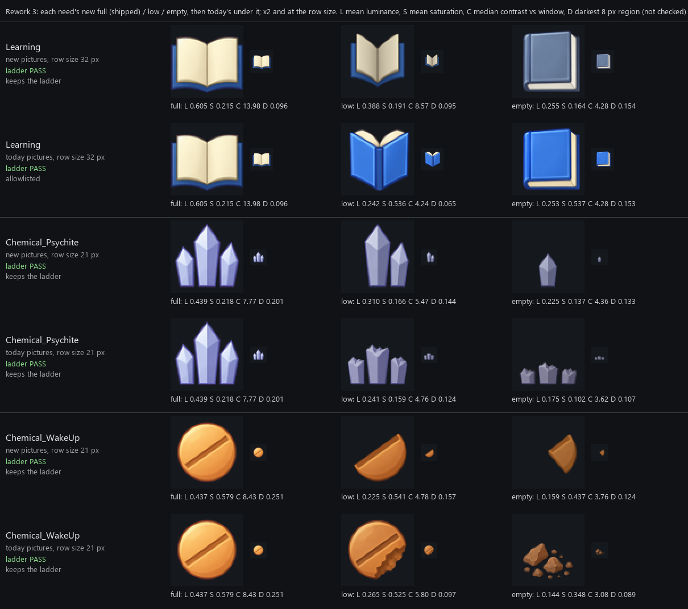
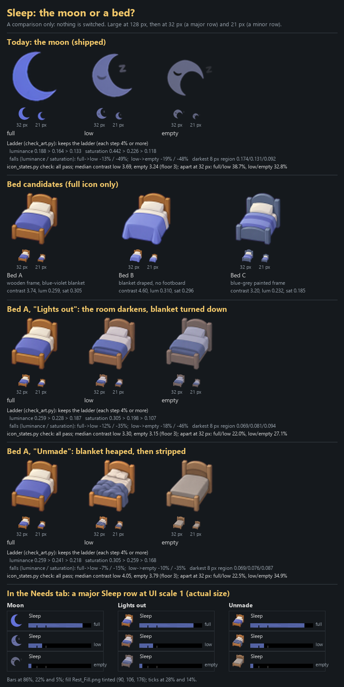

Redraws and the Sleep bed
2026-11-04. Not linked from any Workshop page. Earlier page: art to review.
1. Learning, Psychite and Wake-up, redrawn
Your picks. In each pair of rows the top one is new and the one under it is today's. Learning's low is now the same open book seen from the front, half closed; its empty, the closed book, had to be greyed to stay darker than the new low. Psychite goes three crystals, two, then one small one. Wake-up goes from a whole tablet to a clean half split on its line, then a quarter. A fresh blind reader named all three in the right order. They are ready to go into the add-on when you say so.

2. Sleep: the moon or a bed?
A comparison only; nothing is switched. Today's moon set first, then three bed candidates for the full icon, then Bed A in two versions: "Lights out" (the room darkens and the blanket is turned down) and "Unmade" (the blanket heaped, then the bed stripped). The bottom shows a Sleep row in the Needs tab at its real size for each. The lane thought Bed A "Unmade" reads best at that size, since its shape changes, not only its darkness. Switching to a bed means changing Sleep's icon in Distinct Need Bars too (a 1.1.1 update) and retaking the page images that show Sleep.
